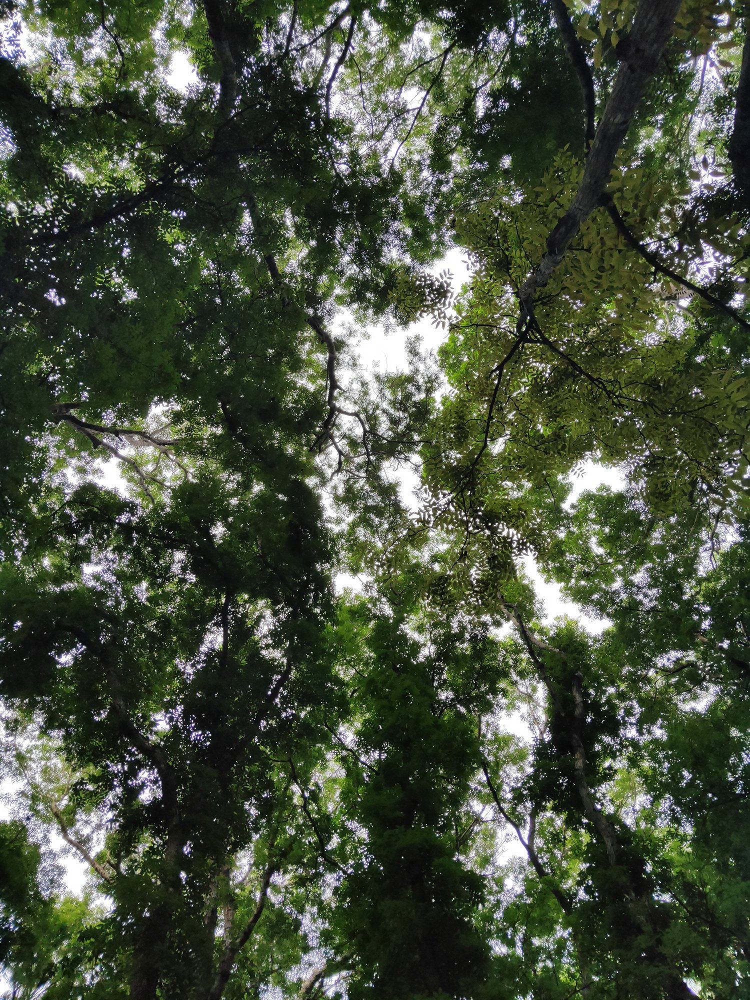
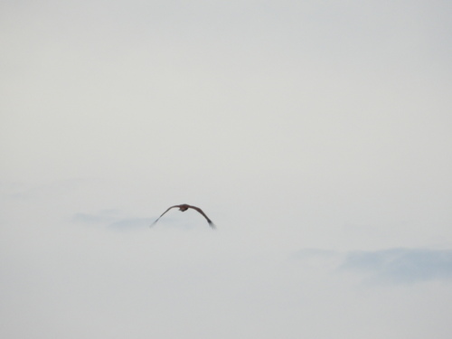
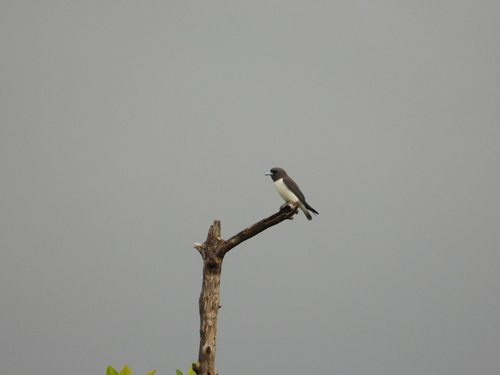
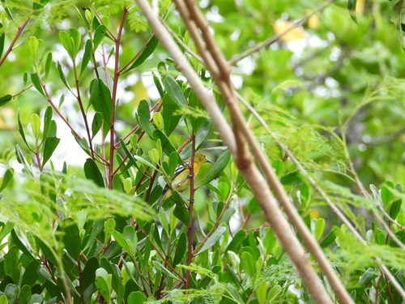
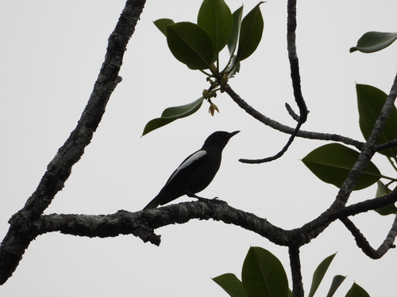
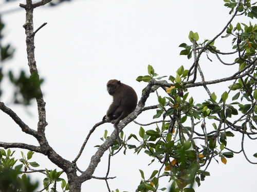
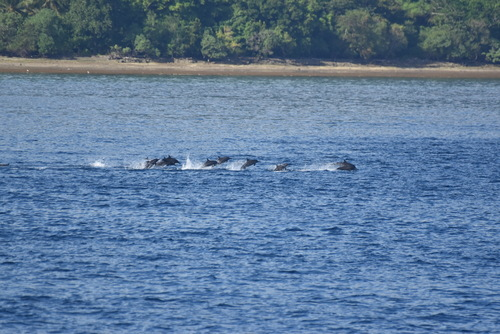
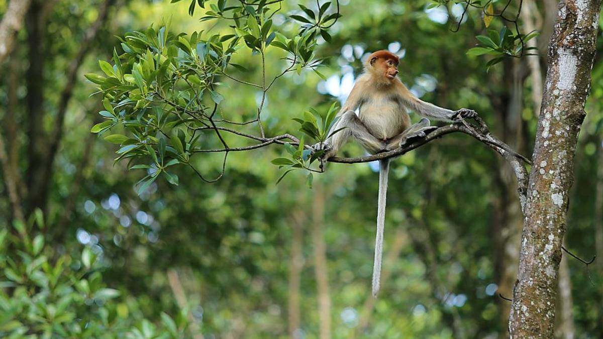
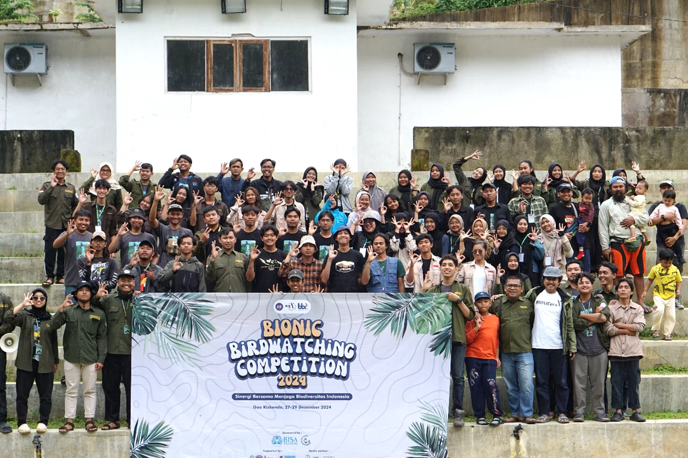
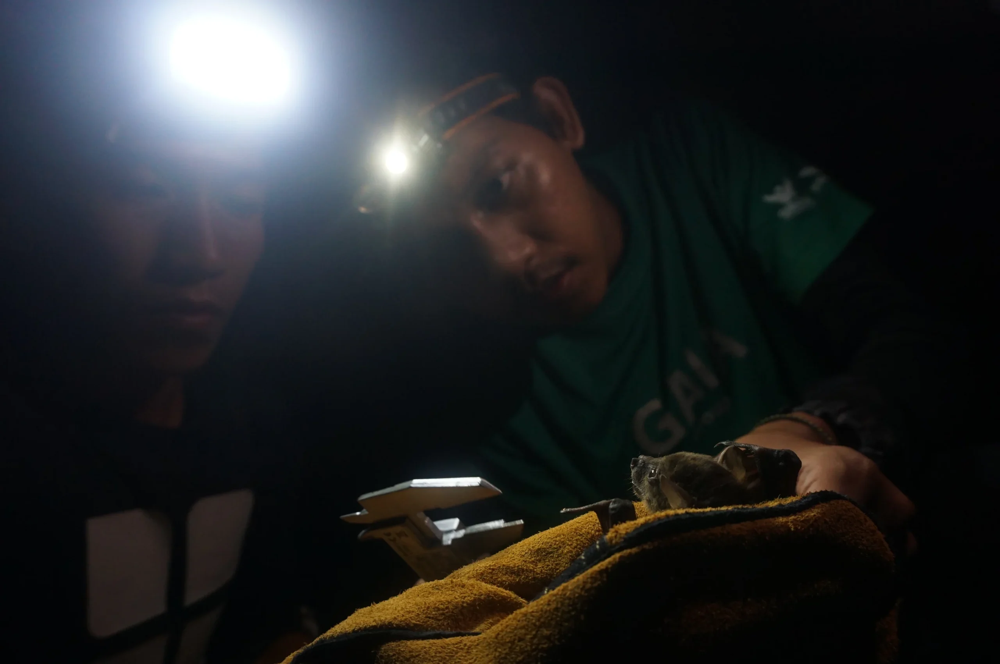

Sustainable Commodities Officer
Gaia Indonesia
Bringing biodiversity evidence into sustainability standards, project development and verification support.
WILDLIFE ECOLOGY · SUSTAINABILITY
I'm Farhan, a mammalogist and primatologist connecting field research with biodiversity conservation and responsible landscapes.
Explore my fieldwork
01 / THE CONNECTION
My work begins with a question about nature: what lives here, how does it use the landscape, and what does it need to persist?
With a background in animal ecology, I have worked on mammal surveys, primate behaviour and biodiversity assessments across Indonesia. Today, as a Sustainable Commodities Officer at Gaia Indonesia, I bring that field perspective to sustainability standards, carbon projects and nature-based solutions.
02 / FIELD EXPERIENCE
Explore a record of mammal survey work across Indonesian landscapes, from village forests to carbon project areas.
Survey recap, March 2022–June 2026. Figures describe survey effort and records, not land protected or animal population size.
Statistics use the ten project entries in Farhan's survey recap. Sampling area, transects and encounter records are summed across the selected projects. Sampling area is reported survey coverage; it is distinct from each project's larger area of interest. Encounter records may include repeated observations and are not a count of unique animals. Species figures shown within a project are reported for that project and should not be added across projects.
03 / NATURAL HISTORY NOTEBOOK
Wildlife encounters, recorded and shared through iNaturalist. Explore a few of my latest uploads.

Research gradeHaliastur indus
23 Apr 2025 (c) Farhan Adyn, some rights reserved (CC BY-NC)
Research gradeArtamus leucorynchus
23 Apr 2025 (c) Farhan Adyn, some rights reserved (CC BY-NC)
Research gradeAegithina tiphia
23 Apr 2025 (c) Farhan Adyn, some rights reserved (CC BY-NC)
Research gradeCopsychus saularis
23 Apr 2025 (c) Farhan Adyn, some rights reserved (CC BY-NC)
Research gradeMacaca fascicularis
23 Apr 2025 (c) Farhan Adyn, some rights reserved (CC BY-NC)
Research gradeStenella longirostris
01 Mar 2025 (c) Farhan Adyn, some rights reserved (CC BY-NC)04 / AREAS OF PRACTICE
Ecological research, practical assessment and sustainability compliance inform one another.
Mammal inventories, primate behaviour and feeding ecology, seed dispersal and habitat use. Experience includes line transects, recce walks, camera trapping, mist-netting and indirect observations.
Biodiversity baselines, preliminary and feasibility studies for carbon projects, HCV/HCS assessment support, field data analysis and biodiversity sections of project and monitoring documents.
Review of RSPO, FSC and CCBA frameworks, alongside biodiversity credit and offset initiatives. Work includes methodology coordination, technical reporting and supporting documentation for third-party validation and verification.
05 / THE JOURNEY
B.Sc. in Biology
Universitas Negeri Jakarta, 2022
Gaia Indonesia
Bringing biodiversity evidence into sustainability standards, project development and verification support.
Gaia Indonesia
Mammal surveys, ecological analysis and biodiversity assessment across project landscapes.
Batang Toru Research Station · YEL / SOCP
Tapanuli orangutan research, phenology monitoring, camera traps and research station operations.
Field research, internships & fellowship
Javan primate surveys, gibbon behaviour and siamang seed dispersal research.
06 / RESEARCH & SHARING
Research publications and conversations that connect species, habitats and conservation practice.
Adyn, M.F., Sibarani, M.C., Utoyo, L., Surya, R.A. & Sedayu, A.
Biodiversitas, 23(4)
7th Conference of Indonesian Bird Researchers and Observers
9th Asian Primates Symposium
07 / FEATURED WRITING
Selected articles I've written on biodiversity, conservation and sustainability. Published in Bahasa Indonesia.

Good News From IndonesiaBIODIVERSITY
Mengenal kekayaan biodiversitas Indonesia, perannya bagi kehidupan, dan potensinya di tingkat dunia.
Read article
Gaia IndonesiaCONSERVATION & COMMUNITY
Kisah Jatimulyo menghubungkan perlindungan burung, wisata alam, dan penghidupan masyarakat.
Read article
Gaia IndonesiaNATURE-BASED SOLUTIONS
Mengapa bukti ekologis dan pemantauan satwa penting bagi integritas proyek karbon dan solusi berbasis alam.
Read articleArticle previews link to the original publishers. Cover images courtesy of the linked articles; original credits remain with their publishers.
08 / LET'S CONNECT
For biodiversity assessments, wildlife research
and sustainability collaborations.